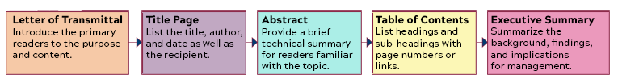
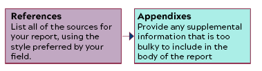

Welcome to Week Thirteen of the course. This week you will continue work on your Recommendation Report. You will finish any work remaining on the body of your report and move on to the front and back matter.

The Sections of the Front Matter of the Recommendation Report 
The Sections of the Back Matter of the Recommendation Report
If you work diligently, you should have a full draft of your report by the end of the week. After Break, you will complete your draft. The Grace Period for all open work in the course closes at 11:59 PM on Friday, April 28.
If you observe these holidays or events and need me to adjust your due dates, send me a message in Canvas.
Objectives for this Module
After completing this week’s activities, you address the following course objectives:
Analyze the rhetorical situation and determine the appropriate audience or users of written communication, considering the needs of global audiences and people with disabilities. [CLO 1]
Prepare to conduct research appropriate to workplace problem solving, such as literature review, evaluation of online resources, interview, and site inspection. [CLO 2]
Consider the ethical and human implications of my situation. [CLO 3]
Use conventions of various workplace genres, such as proposals, instructions, correspondence, reports, and slide decks, with understanding of how the genre conventions can be used as heuristics and as principles of arrangement. [CLO 4]
Collaborate with classmates in planning, researching, writing, revising, and presenting information. [CLO 5]
Activities to Complete
Due Dates
All work is due by 11:59 PM on Friday, April 21.
Grace Period:
Ends at 11:59 PM on Wednesday,December 6 for your Check-in Survey.
Ends at 11:59 PM on Friday, April 28 for the rest of the week’s work.
📚 To Read This Week
Chapter 7 of Markel & Selber, “Organizing Your Information”
Chapter 18 of Markel & Selber, “Writing Recommendation Reports”